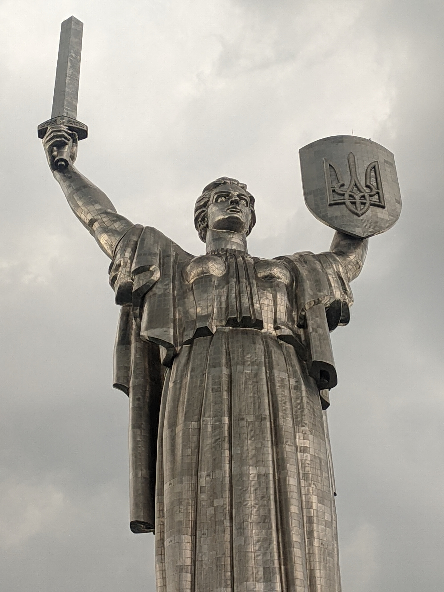

Народився 23 січня 2006 року у м. Генічеськ
Навчався у Генічеському Ліцеї. Наразі у НТУУ "КПІ", м. Київ
Хоббі:
Улюблені фільми:
Ки́їв — столиця та найбільше місто України. Розташований у середній течії Дніпра, у північній Наддніпрянщині. Політичний, соціально-економічний, транспортний, освітньо-науковий, історичний, культурний та духовний центр України. У системі адміністративно-територіального устрою України Київ має спеціальний статус, визначений Конституцією, і не входить до складу жодної області, хоча і є адміністративним центром Київської області
